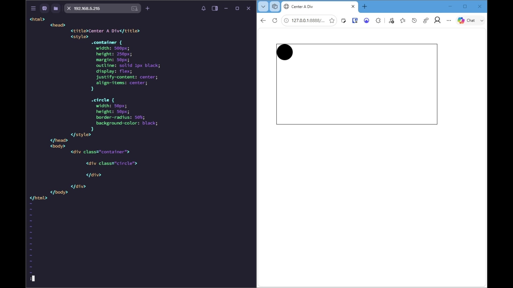

1. Add Flexbox centering to the container
setup · 00:00:05 · confidence 99%
Set the container to a flex layout, then center its child on both axes with `justify-content` and `align-items`.

Commands
display: flex; justify-content: center; align-items: center;
Visible text
.container {
width: 500px;
height: 250px;
margin: 50px;
outline: solid 1px black;
display: flex;
justify-content: center;
align-items: center;
}
OCR corroboration (72% mean word confidence)
© wm X 192168.5.215 : 40 o x @ Center A div so
<html> € CO 12001888.. Y OE © Gla FD FQ - Gor
<head>
<titlecenter A Div</title>
<style>
«container {
width: 509px; ry
margin: 50px;
outline: solid 1px black;
display: flex;
justify-content: center;
align-items: center;
}
-circle {
border-radius: 50%;
background-color: black;
}
</style>
</head>
<body>
<div class="container">
<div class="circle">
</div>
</div>
</body>
</html>
Command/OCR agreement: 100%
Transcript evidence
Now to exit VIM, hit Escape, then colon wq! to save.
Span: 00:00:05–00:00:08